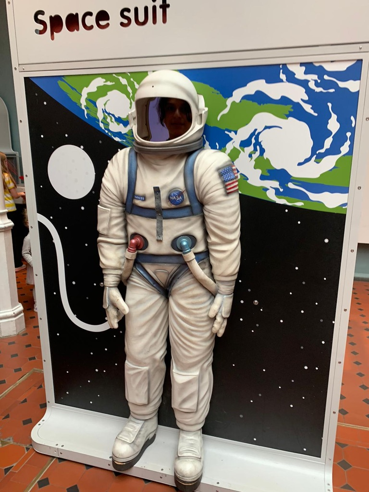

Zee Suwaid
Personal Profile
A motivated and committed individual with a proven ability to effectively evaluate, organise and prioritise work within an overall project schedule. Able to communicate effectively with work colleagues at all levels. I am a multi-skilled, reliable and talented translator with an ability to translate written documents from a source language to a target language. A quick learner who can absorb new ideas and can communicate clearly and effectively with people from all social and professional backgrounds. Well mannered, articulate and fully aware of diversity and multicultural issues. Flexible in the ability to adapt to challenges when they arise and at the same time remaining aware of professional roles and boundaries.
kEY skills
- Holder of current SIA badge valid until 201
- Holder of current CSCS card.
- Excellent communication and social skills with the ability to fluently speak Arabic, English, French and undertake translation work.
- Ability to work to tight deadlines, prioritise workload and to work under pressure.
- Understands the importance of customer confidentiality
- Willing to travel and work in all weather inclements.
Work Hstory
Glasgow 2014 Commonwealth Games
Volunteer Uniform Team Leader 29 April 2014 – 03 August 2014
Duties
- Answering queries
- Facilitate problem solving and collaboration.
- Making sure everything is prepared and tidy.
- Covering stations (check in, fitting room, distribution, warehouse and check out).
Royal Mail
December 2015 - Present
Duties
- Mail sorting (letters and parcels).
- Delivering mail and parcels
- Sorting letters in terms of areas and post codes.
- Handling high value items and special deliveries.
- Moving bags and pushing trolleys (Yorks).
British International Police Advisor Basra city-Iraq
Interpreter June 2006 – August 2007
Duties
- Translate recorded calls from members of the public.
- Disseminate information to relevant agencies in timely manner.
- Interpret for the IPA when training, mentoring or correctional guidance is given.
- Interpret when Senior Iraqi visitors have attended the Hotline office.
- Troubleshoot with local services when required relating to daily infrastructure issue.
Training
- Barbering Course (cottish Barbering School July 2014)
- Health and safety (Glasgow West Regeneration Agency 2011)
- Security Officer (BluePrint Security- Glasgow 2012)
Academic Qualifications
- Master of Arts M.A. / Glasgow University
- B.A. French / University of Baghdad 1999 – 2003
- SQA Higher English / North Glasgow College 2009 – 2010
Other
Languages
Hobbies
Contact Me